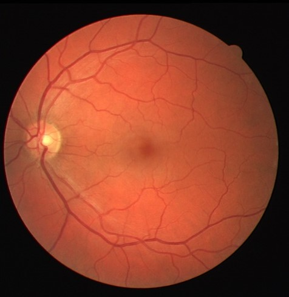
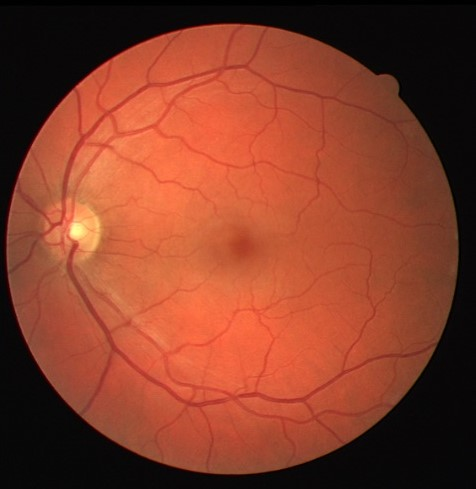
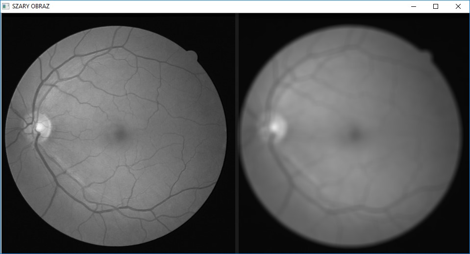
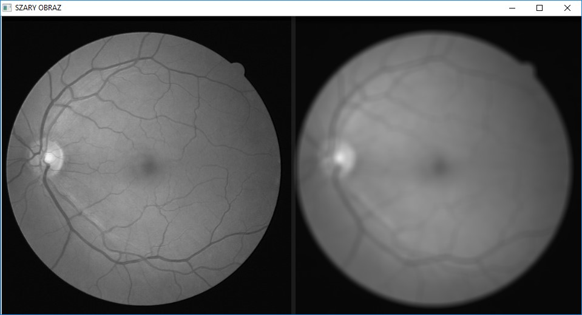

Laboratoria 1: Progowanie, czyli najprostsza forma segmentacji
Segmentacja - proces podziału obrazu na części określane jako obszary (regiony), które są jednorodne (homogeniczne) pod względem pewnych wybranych własności. Obszarami są zbiory pikseli (punktów).
Na pierwszym laboratorium z Rekonstrukcji i Analizy Obrazu zajmowaliśmy się progowaniem. Progowanie (thresholding) to metoda uzyskiwana na podstawie obrazu kolorowego lub w odcieniach szarości. Nasze obrazy będziemy tworzyć na podstawie obrazów w odcieniach szarości. Progowanie polega na wyznaczeniu dla danego obrazu progu jasności, a następnie każdy jaśniejszy piksel większy od progu (jaśniejszy) otrzymuje jedną wartość, a mniejszy (ciemniejsze) otrzymują drugą. Częstym zastosowaniem progowania jest oddzielenie obiektów pierwszoplanowych od tła. Naszym zadaniem będzie oddzielenie naczyń krwionośnych na zdjęciach siatkówki oka od jej tła. Na naszym laboratorium używaliśmy środowiska Python wraz z biblioteką OpenCV.
Na pierwszym laboratorium z Rekonstrukcji i Analizy Obrazu zajmowaliśmy się progowaniem.
Progowanie (thresholding) to metoda uzyskiwana na podstawie obrazu kolorowego lub w odcieniach szarości. Nasze obrazy będziemy tworzyć na podstawie obrazów w odcieniach szarości. Progowanie polega na wyznaczeniu dla danego obrazu progu jasności, a następnie każdy jaśniejszy piksel większy od progu (jaśniejszy) otrzymuje jedną wartość, a mniejszy (ciemniejsze) otrzymują drugą.
Częstym zastosowaniem progowania jest oddzielenie obiektów pierwszoplanowych od tła.
Naszym zadaniem będzie oddzielenie naczyń krwionośnych na zdjęciach siatkówki oka od jej tła.
Na naszym laboratorium używaliśmy środowiska Python wraz z biblioteką OpenCV.
W bibliotece OpenCV udostępniona jest metoda threshold o następującej sygnaturze :
(T, threshImage) = cv2.threshold(src, thresh, maxval, type)
Gdzie:
-src – obraz na którym będziemy dokonywali segmentacji (najlepiej w odcieniach szarości)
maxval – wartość użyta, jeśli jakiś piksel jest powyżej progu
- type – metoda progowania
Na początku zajęć ściągnęłyśmy publiczną bazę danych DRIVE ze strony podanej w opisie projektów.
Swoje pierwsze kroki w programie Python rozpoczęłyśmy poprzez wczytanie zdjęcia za pomocą następującego kodu:
 Komenda pozwoliła nam wyświetlić jedno ze zdjęć z bazy (wcześniej zamieniłyśmy roszerzenie zdjęcia z tif na jpg :

Komenda pozwoliła nam wyświetlić jedno ze zdjęć z bazy (wcześniej zamieniłyśmy roszerzenie zdjęcia z tif na jpg :

 Efekt był następujący:
Efekt był następujący:
 Poniżej przedstawiamy efekt:
Poniżej przedstawiamy efekt:

Czego efektem będzie:
Ponieważ różnice pomiędzy wszystkimi trzema metodami są małe, wybraliśmy pierwszy sposób.


 
